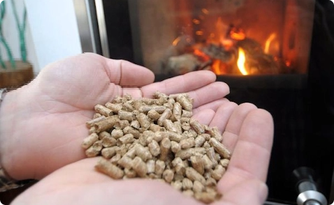

Votre logement est-il réellement adapté à votre perte d'autonomie ?
Effectuez en ligne votre diagnostic autonomie, recevez un bilan détaillé,
nos recommandations, et une liste détaillée des aides permettant de financer votre projet d'adaptation.
Votre Diagnostic Autonomie pour
249€
99€seulement
> Offre limitée
Avec paiement uniquement après réalisation
+ de 20.000 €
d’aides et subventions à votre portée
N°1 du Diagnostic Autonomie
Le service en ligne le + complet du marché
Une tarification adaptée
Un prix fixe étudié pour être à la portée des +
modestes
Simple, rapide et efficace
Accessible à tous, votre rapport détaillé
disponible instantanément
LES PRINCIPAUX AVANTAGES
DE
RÉALISER UN
DIAGNOSTIC LOGEMENT AUTONOMIE ?
Réaliser un Diagnostic Logement Autonomie offre plusieurs avantages permettant d’assurer l’autonomie, le
confort, la sécurité, la qualité de vie des + fragiles
Un état des lieux précis du logement
Le principal objectif d’un Diagnostic Logement Autonomie est de dresser
un état des lieux précis de votre logement afin de pouvoir déterminer son
niveau
d’accessibilité, de confort et de
sécurité au regard des problématiques que vous rencontrez aujourd’hui ou
que vous rencontrerez demain.
Une proposition de travaux à réaliser
Une fois le Diagnostic Logement Autonomie réalisé,
un rapport détaillé vous présente de façon exhaustive les travaux d’adaptation à
réaliser,
tant à l’intérieur qu’à l'extérieur de votre logement, dans l’objectif de vous assurer une
parfaite indépendance et donc un
maintien à domicile prolongé.
Des aides et subventions personnalisées
Tout projet d’adaptation a un coût non négligeable. Grâce à notre service de Diagnostic Logement Autonomie en
ligne, recevez
une liste personnalisée des aides et subventions auxquelles vous pouvez prétendre
pour financer votre projet d’adaptation.
+ de 20.000 Euros d’aides et subventions peuvent être mobilisés selon les profils.
Prévenir les chutes
Les chutes à domicile représentent la première cause de décès accidentel chez les seniors. On dénombre chaque
année près de 12.000 décès en France faisant suite à une chute.
Réaliser un Diagnostic Logement Autonomie afin d’adapter son logement c’est prévenir et donc diminuer le
risque de chute.
Améliorer le bien-être physique et mental
Un logement non adapté est source de peur, de besoin d’assistance, et donc de mal-être chez la personne âgée.
Réaliser un Diagnostic Logement Autonomie et adapter son logement permet d’offrir à la personne âgée un
environnement sécurisé, sécurisant et donc rassurant.
Prévenir les hospitalisations
Ce sont pas moins de 150.000 hospitalisations de personnes âgées chaque année liées à une chute à domicile.
Réaliser un Diagnostic Logement Autonomie et adapter par la suite son logement grâce aux préconisations
apportées c’est réduire le risque d’une hospitalisation et d’une perte d’indépendance.
A QUI S’ADRESSE LE DIAGNOSTIC LOGEMENT AUTONOMIE ?
Le Diagnostic Logement Autonomie ne s’adresse pas uniquement aux personnes âgées rencontrant déjà des
difficultés mais s’adresse également et surtout à toute personne souhaitant agir de façon préventive et
anticiper une situation évidente de perte d’autonomie dans les prochaines années. Le fait de prévenir une
pareille situation permet d’assurer à toute personne son indépendance, sa sécurité, son confort, et surtout
son maintien à domicile.
Vous l’aurez compris, réaliser un Diagnostic Logement Autonomie permet de dresser un état des lieux complet
et détaillé d’un logement afin de pouvoir déterminer son niveau d’accessibilité et de confort au regard des
difficultés rencontrées par son occupant. Une fois le Diagnostic Logement Autonomie réalisé, il vous sera
présenté une liste de préconisations de travaux d’adaptation qui permettront de répondre aux problématiques
relevées, ainsi que les aides financières auxquelles vous pouvez prétendre pour financer votre projet.
ACTUALITÉS
SÉNIORS
Attention ! Votre ballon d'eau chaude risque d'être désactivé par l'état cet hiver... Voici pourquoi.
07/12/2023 à 11:45
Chauffage: évitez à tout prix ce type de radiateur qui consomme énormément
07/12/2023 à 11:45
Ne gaspillez plus de l'argent en lavant vos vêtements... Voici l'heure idéale !
07/12/2023 à 11:45

Achat de pellets: découvrez les astuces pour réduire votre facture